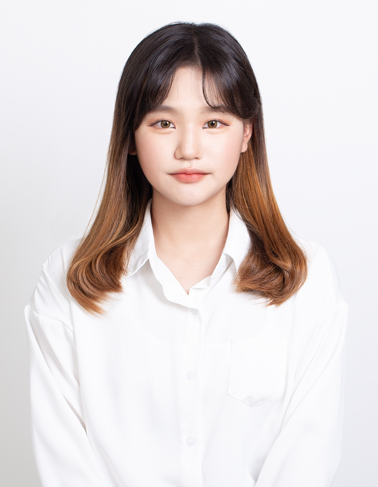
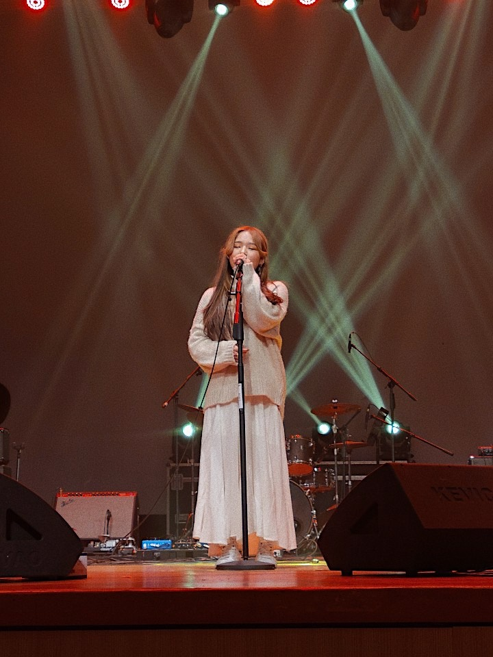

About
어디서든 조화롭게 어울리는
디자이너, 송주연입니다.
디자인에서 가장 중요한 것은 클라이언트와 동료들간의 커뮤니케이션이라고 생각합니다. 저는 뛰어난 친화력과 소통 능력을 발휘하여 '대화'를 잘 하는 사람이 되고 싶습니다.
다양한 시각을 가지고 사용자에 입장에서 먼저 생각하여 능동적인 자세로 커뮤니케이션을 하여 트렌드 있고, 세련된 디자인을 만들고 싶습니다. 매번 한 발짝 더 나아가는 디자이너가 되겠습니다.
또한 프로젝트를 준비할 때, 타겟이 지닌 특성을 정확하게 파악하고 충분한 자료조사를 통해 이유를 설명할 수 있는 디자인을 만들 것입니다. 일상에서도 습관적으로 래퍼런스들을 찾고 디자인 트렌드를 공부하는 등 꾸준히 배움의 길을 넓히도록 할 것입니다.
언제나 새로운 것에 열정적이게 다가가고 두려워 하지않고 도전하는 것을 좋아하는 디자이너가 되도록 하겠습니다.

skill
.png)
다양한 툴과 레이아웃 구성을 할 수 있으며, 이미지 보정, 합성, 리터치 등 다양한 작업이 가능합니다. 일러스트를 이용해 로고와 백터 이미지 등 그래픽 작업이 가능합니다.
html 기본 구조를 파악하고 있으며, css와 javascript, jqurey를 이용해 간단한
동작구현을 통해 웹 사이트를 제작할 수 있습니다.
(scroll, slider, hover,mobile menu 등)
Vision
- 1년 후, 저는 한 발짝 더 성장하는 디자이너입니다.
- 저는 신입으로써 다양한 프로젝트를 하며 더욱 더 성장한 디자이너가 되어 있을 것입니다. 항상 동료들과 선배님들의 말을 귀 기울이며 작은 디테일 하나도 놓치지 않을 것이며, 궁금한 것을 여쭤볼 때, 메모하는 습관을 가지며 업무를 더욱 더 효율성있게 할 것입니다.
- 5년 후, 저는 확신을 가진 디자이너입니다.
- 다양하고 많은 실무 경험을 통해 전략과 소통능력이 많이 늘어나 있으며, 원활한 커뮤니케이션을 위해 기획과 개발 영역의 업무 시스템을 이해하고 공부하면서 팀원들의 의견을 수용해 나갈 것입니다. 더 나아가서 현재에 안주하지 않고 끊임없이 노력하는 디자이너가 되겠습니다.
- 10년 후, 저는 팀원을 이끄는 디자이너입니다.
- 10년 후 저는 인정을 갖춘 디자이너가 되어 있을 것입니다. 트렌드에 뒤쳐지지 않고 흐름을 잘 파악하여 디자인을 창작 할 것이며, 디자이너로써 역량 뿐만 아니라 경험한 다양한 노하우를 팀원들에게 잘 알려주며 의지할 수 있는 사람이 될 것입니다.
Epilogue
그린컴퓨터 아카데미에서 몇 개월간 수료하면서 정말 많은 지식을 배웠습니다. 기획부터 디자인 개발 처음부터 끝까지 세세한 부분 모든 게 제 손길이 닿아 만들어졌다는 점이 가장 뿌듯합니다. 앞으로 디자이너로써 항상 다양한 사물과 환경을 관찰하고 일상에서도 작은 아이디어 하나 놓치지 않고 써내려가는 디자이너가 되겠습니다. 앞으로도 이런 학구열 을 잃지 않고 끊임없이 배우고 성장하는 디자이너가 되고 싶습니다.
BUSAN MUSIC
부산뮤직실용음악학원 웹 사이트
줄- INFO
- 로고까지 자체 제작한 저의 첫 번째 리디자인 웹 사이트 입니다. 음악학원 에 맞는 키워드를 많이 사용하였고 합격생 명단을 크게 넣어 현장감과 긴장감을 주었습니다.
*본 페이지는 웹사이트로 제작되었습니다.
본인 기여도 : 100%
Project web site redesign
Font Nanum gothic
Color #ebae09, #151515, #fff
Process html, css, photoshop, illustrator
GUIDE
NERDCONNECTION
너드커넥션 반응형 웹 사이트
줄- INFO
- 너드커넥션의 컨셉과 맞게 분위기 있고 세련된 색을 사용하였고 정갈한 폰트를 사용해 가독성을 높여주었습니다. 각 멤버를 알리는 정보를 많이 넣어 홍보성을 더 높였습니다.
*본 페이지는 반응형으로 제작되었습니다.
본인 기여도 : 100%
Project web site design
Font Nanum gothic
Color #172318, #151515, #fff
Process html, css, photoshop, javascript(jquery)
GUIDE
YOUNGMAN PIZZA
청년피자 반응형 웹 사이트
줄- INFO
- 청년피자의 따뜻하면서 키치한 분위기를 살려 파스텔톤으로 제작해 보았습니다. BEST, NEW, EVENT 등 중요한 정보를 간결하지만 깔끔하게 정리해 배치했습니다.
*본 페이지는 반응형으로 제작되었습니다.
본인 기여도 : 100%
Project web site redesign
Font Nexon gothic
Color #fbe4ec, #000, #fff, #ff4341
Process html, css, photoshop, javascript(jquery), illustrator
GUIDE

PET CART
PET CART 모바일
줄- INFO
- 처음으로 redesign이 아닌 기획부터 디자인, 개발까지 다 한 반려동물 쇼핑 어플리케이션입니다. 근처 매장찾기, 배달 픽업 서비스, 리뷰 등 여러가지 편리하고 다양한 서비스를 넣어보았습니다.
*본 페이지는 모바일로 제작되었습니다.
본인 기여도 : 100%
Project web site redesign
Font 레시피 코리아, 모바일 고딕
Color #938aff, #000, #fff, #ccc
Process html, css, photoshop, javascript(jquery)

GUIDE
RENAULT KOREA
르노 삼성 반응형 웹 사이트
줄- INFO
- 르노삼성의 자동차를 크게 배치해 홍보성을 높이고 슬라이드를 이용해 버전 모두 가독성을 높였습니다. 버튼을 누르면 차 내부 모습이 디테일하게 보이게 하여 정보 전달의 효율성을 높여보았습니다.
*본 페이지는 반응형으로 제작되었습니다.
본인 기여도 : 100%
Project web site redesign
Font Nexon gothic, Lemon Mlik
Color #ffcc33, #000, #fff
Process html, css, photoshop, javascript(jquery)
GUIDE